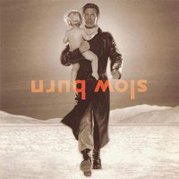
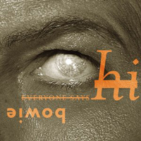
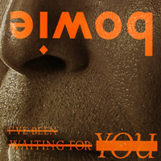

2002 - HEATHEN |
||||
Having overtly referenced Christian imagery on Heathen's predecessor, 'hours ...', Bowie again turned to religious symbolism, but in an altogether more sacrilegious-seeming way. His digitally-enhanced opaque eyes were, he revealed, a nod to the fishes' eyes of early Christian iconography, while the upside-down title spoke for itself. Photographer Markus Klinko and designer Jonathan Barnbrook had been hired to create the album cover following their work on I Am Iman, the autobiography of Bowie's wife, Iman. "We took the theme of Heathen as someone who goes against the popular preconceived or 'sacred' notions, as Bowie has been for the majority of his career" Barnbrook wrote on his website in 2002, adding that they "wanted to have the absolute minimum number of elements on the cover". Photographer: Markus Klinko | Designer: Jonathan Barnbrook |
||||
SUNDAY Nothing remains We could run when the rain slows Look for the cars or signs of life Where the heat goes Look for the drifters We should crawl under the bracken Look for the shafts of light on the road Where the heat goes Everything has changed For in truth it's the beginning of nothing And nothing has changed Everything has changed For in truth it's the beginning of an end And nothing has changed Everything has changed (In your fear) In your fear (Seek only peace) Of what we have become (In your fear, seek only love) Take to the fire (In your fear) Now we must burn (Seek only peace) All that we are (In your fear, seek only love) Rise together (In your fear) Through these clouds (In your fear) As on wings This is the trip And this the business we take This is our number All my trials Lord, will be remembered Everything has changed CACTUS Sitting here wishing on a cement floor Just wishing that I had just something you wore I put it on when I go lonely Will you take off your dress and send it to me? I miss your kissing and I miss your head And a letter in your writing doesn't mean you're not dead Just run outside in the desert heat Make your dress all wet and send it to me I miss your soup and I miss your bread And a letter in your writing doesn't mean you're not dead So spill your breakfast and drip your wine Just wear that dress when you dine D-A-V-I-D Sitting here wishing on a cement floor Just wishing that I had just something you wore Bloody your hands on a cactus tree Wipe it on your dress and send it to me Sitting here wishing on a cement floor Just wishing that I had just something you wore SLIP AWAY Oogie waits for just another day Drags his bones To see the Yankees play Bones Boy talks and flickers gray Oh, they slip away Once a time They nearly might have been Bones and Oogie on a silver screen No one knew what they could do Except for me and you They slip away They slip away Don't forget To keep your head warm Twinkle twinkle Uncle Floyd Watching all the world And war torn How I wonder where you are Oh-o Sailing over Coney Island Twinkle twinkle Uncle Floyd We were dumb But you were fun, boy How I wonder where you are Oh-o Oogie knew there's never ever time Some of us will always stay behind Down in space it's always 1982 The joke we always knew Oh-oh What'sa matter with you C'mon, let's go Slip away Oh-o Don't forget To keep your head warm Twinkle twinkle Uncle Floyd Watching all the world And war torn How I wonder where you are Oh-o Sailing over Coney Island Twinkle twinkle Uncle Floyd We were dumb But you were fun, boy How I wonder where you are Oh-o SLOW BURN Here shall we live in this terrible town Where the price for our minds Shall squeeze them tight like a fist And the walls shall have eyes And the doors shall have ears But we'll dance in their dark And they'll play with our lives Like a Slow Burn Leading us on and on and on Like a Slow Burn Turning us round and round and round Hark who are we So small in times such as these Slow Burn Slow Burn Oh, these are the days These are the strangest of all These are the nights These are the darkest to fall But who knows? Echoes in tenement halls Who knows? Though the years spare them all Like a Slow Burn Leading us on and on and on Like a Slow Burn Twirling us round and round And upside down There's fear overhead There's fear overground Slow Burn Slow Burn Like a Slow Burn Leading us on and on and on Like a Slow Burn Turning us round and round and round And here are we At the center of it all Slow Burn Slow Burn Slow Burn AFRAID I wish I was smarter I got so lost on the shore I wish I was taller Things really matter to me But I put my face in tomorrow I believe we're not alone I believe in Beatles I believe my little soul has grown And I'm still so afraid Yeah, I'm still so afraid Yeah, I'm still so afraid On my own On my own What made my life so wonderful? What made me feel so bad? I used to wake up the ocean I used to walk on clouds If I put faith in medication If I can smile a crooked smile If I can talk on television If I can walk an empty mile And I won't feel afraid No I won't feel afraid I won't be, be afraid anymore Anymore (And then I just won't be afraid) Anymore (And then I just won't be afraid) I'VE BEEN WAITING FOR YOU (I've been looking, I've been looking) (I've been looking, I've been looking) I've been looking For a woman To save my life Not to beg or to borrow A woman with a feeling Of losing once or twice Who knows how it could be Be tomorrow I've been waiting for you And you've been coming to me For such a long time now For such a long time now A woman with a feeling Of losing once or twice Who knows how it could be Be tomorrow I've been waiting for you And you've been coming to me For such a long time now For such a long time now For such a long time now For such a long time now I WOULD BE YOUR SLAVE Walking in the snowy street Let me understand Drifting down a silent park Stumbling over land Open up your heart to me Show me who you are And I would be your slave Do you sleep in quietude? Do you walk in peace? Do you laugh out loud at me? No one else is free Open up your heart to me Show me all you are And I would be your slave I don't sit around and wait I don't give a damn I don't see the point at all No footprints in the sand I bet you laugh out loud at me A chance to strike me down Give me peace of mind at last Show me all you are Open up your heart to me And I would be your slave I don't sit around and wait I don't give a damn I don't see the point at all No footprints in the sand I would give you all my love Nothing else is free Open up your heart to me And I would be your slave I TOOK A TRIP ON A GEMINI SPACESHIP I took a trip On a Gemini spacecraft And I thought about you I passed through the shadow of Jupiter And I thought about you I shot my space gun And boy, I really felt blue Two or three flying saucers Parked under the stars The winding stream Moon shining down On some little town And with each beam The same old dream I took a trip On a Gemini spacecraft And I thought about you I shot my space gun And I thought about you I pulled down my sun visor Boy, I really felt blue You jumped into your Gemini I jumped into mine We'll orbit the moon For just one time Tomorrow night Tomorrow night Will you hold hands With me under the moonlight I took a trip In a Gemini spacecraft And I thought about you I shot my space gun And I thought about you I took I took a walk in space Boy, I really felt blue Well, I peeked through the crack And I looked way back The stardust trail Leading back to you What did I do What could I do Yes what did I do Well I thought about you I thought about you Took a trip On a Gemini spacecraft Thought about you 5:15 THE ANGELS HAVE GONE 5:15 I'm changing trains This little town Let me down This foreign rain Brings me down 5:15 Train overdue Angels have gone No ticket I'm jumping tracks I'm changing towns We never talk anymore Forever I will adore you 5:15 All of my life Angels have gone I'm changing trains Angels like them Thin on the ground All of my life All legs and wings Strange sandy eyes 5:15 Train overdue Angels have gone We never talk anymore Forever I will adore you Cold station All of my life Forever I'm out of here forever EVERYONE SAYS 'HI' Said you took a big trip They said you moved away Happened oh, so quietly They say Shoulda took a picture Something I could keep Buy a little frame Something cheap For you Everyone says 'Hi' Said you sailed a big ship Said you sailed away Didn't know the right thing To say I'd love to get a letter Like to know what's what Hope the weather's good And it's not too hot For you Everyone says 'Hi' Everyone says 'Hi' Everyone says Don't stay in a sad place Where they don't care how you are Everyone says 'Hi' If the money is lousy You can always come home We can do the old things We can do all the bad things If the food gets you leery You can always phone We could do all the good things We could do it, we could do it We could do it Don't stay in a bad place Where they don't care how you are Everyone says 'Hi' Everyone says 'Hi' Everyone says 'Hi' And the girl next door And the guy upstairs Everyone says 'Hi' And your mum and dad Everyone says 'Hi' And your big fat dog Everyone says 'Hi' Everyone says 'Hi' Hi hi hi hi A BETTER FUTURE Please don't tear this world asunder Please take back this fear we're under I demand a better future Or I might just stop wanting you I might just stop wanting you Please make sure we get tomorrow All this pain and all the sorrow I demand a better future Or I might just stop needing you I might just stop needing you Give my children sunny smiles Give them moon and cloudless skies I demand a better future Or I might just stop loving you Loving you, loving you When we talk, we talk to you When we walk, we walk to you From factory to field How many tears must fall Down there below Nothing is moving I might just stop wanting you I might just stop needing you I might just stop loving you I demand a better future I demand a better future I demand a better future For I might just stop loving you Loving you, loving you I demand a better future I demand a better future I demand a better future For I might just stop loving you, loving you, loving you I demand a better future HEATHEN Steel on the skyline Sky made of glass Made for a real world All things must pass Waiting for something Looking for someone Is there no reason? Have I stared too long? You say you'll leave me And when the sun is low And the rays high I can see it now I can feel it die |
||||
SINGLES |
||||
   |
||||